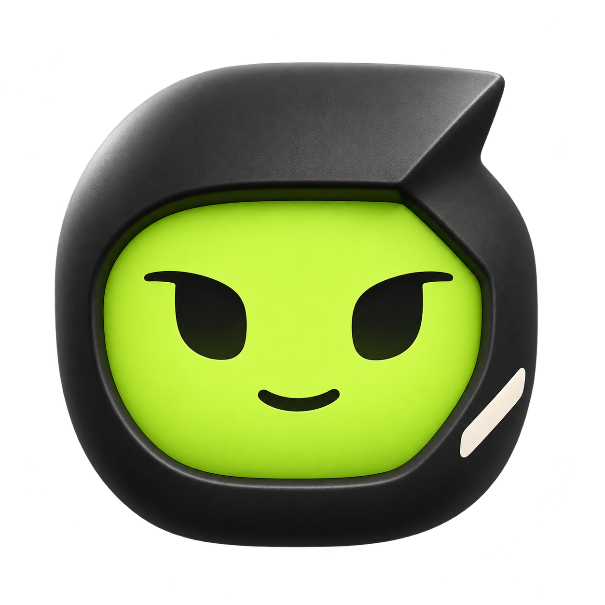

نفس شاشة KO على الموبايل بالظبط (بعد T-419). الجديد متعلّم عليه بخط متقطّع.

مساعدك في Kochivo
حمو اتمرن النهارده؟ (حمو يعني أحمد سامي)
أيوه، أحمد سامي خلّص تمرين رجل الساعة 7 الصبح، 5 من 5 تمارين.
وكام واحد واقع؟
3 لاعيبة ما اتمرنوش من أسبوع: كريم، يوسف، ومازن.
إيه اللي مش مظبوط؟
مساعدك في Kochivo
ابعتلي الجدول بتاع بكره
بكره عندك 3 مواعيد اشتراكات بتخلص: كريم، يوسف، ومازن.
لأ، الجدول عندي يعني برنامج التمرين
تمام، فهمت. بكره عند فريقك تمرين ضهر وباي لـ 6 لاعيبة، وراحة لـ 4.
(بعد يومين) الجدول بتاع النهارده؟
النهارده رجل لـ 5 لاعيبة، وصدر لـ 3.
7 حاجات
خلّي KO يتعلم من كلامي
لو قفلته، KO مش هيحفظ حاجة جديدة.